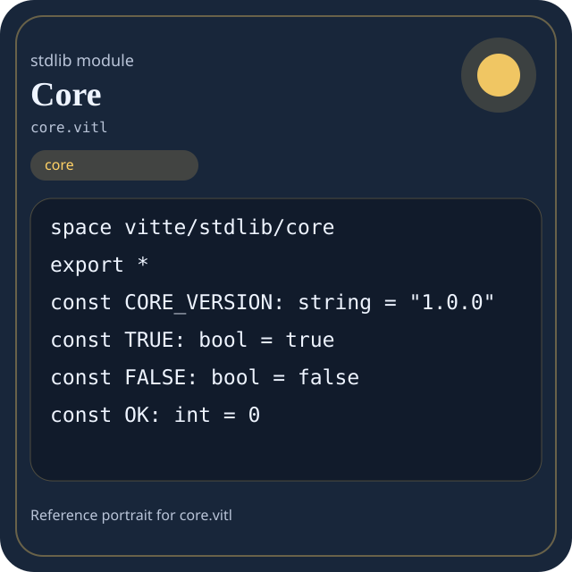

Stdlib module core.vitl
This page is a wiki-style reference for one concrete stdlib file. It explains what the file owns, where it fits in the family, and how to decide whether this is the right surface to depend on.

core.vitl.Family: core
Kind: public stdlib surface
Page style: this reference follows the same “encyclopedic card + portrait + usage contract” logic as the keyword pages, but for stdlib modules.
Summary
- Overview
- Purpose
- Taxonomy
- Implementation profile
- Top-level API inventory
- Position in family
- Declaration map
- Representative signatures
- How to use this module
- User example
- Keyword coverage
- Source shape
- Source landmarks
- Source organization
- Complete API catalog
- Integration boundaries
- Composition guidance
- Relationship table
- Neighbor modules
Overview
| Field | Value |
|---|---|
| Path | core.vitl |
| Family | core |
| Kind | public stdlib surface |
| Line count | 1404 |
| Declared procedures | 131 |
| Declared forms/picks | 16 |
`core.vitl` is a public stdlib surface inside the `core` family. It should be read as one focused slice of the broader family responsibility: Portable low-level building blocks: types, strings, memory helpers, panic/runtime-adjacent basics, and reusable utility routines.
Purpose
This file should be chosen because of responsibility, not because its name “sounds close enough”. Inside the core family, it carries one focused part of the contract and keeps that responsibility separate from neighboring concerns.
- A manifest validator stores names and counters with `core` types.
- A pure helper normalizes a string or integer without touching host state.
- The same helper can be reused in compiler code, stdlib code, and user code.
Taxonomy
Think of this page as a generated encyclopedia entry rather than a hand-written tutorial. The goal is to show what kind of module this is, how dense it is, and what reading strategy makes sense before depending on it.
- Large algorithm surface: this file exposes many procedures and likely acts as a domain toolkit rather than a single thin wrapper.
- Owns domain vocabulary: the module declares data shapes in addition to executable helpers, so its types are part of the contract.
- Has tuning constants: part of the module behavior is controlled by named constants that document default precision, limits, or policy.
- Minimal top-level dependencies: the module reads as mostly self-contained from its opening declarations.
- Explicit export surface: the file ends with visible export declarations instead of relying only on implicit namespace discovery.
Implementation profile
This profile is inferred directly from the source text. It does not replace reading the file, but it tells you quickly whether the module is mostly declarative, loop-heavy, branch-heavy, or organized around many small exits.
| Signal | Count | What it suggests |
|---|---|---|
if | 100 | Branching density and local decision-making. |
while | 22 | Loop-heavy or iterative implementation style. |
for | 0 | Collection-style traversal at source level. |
match | 5 | Variant-driven branching or grammar-style decoding. |
let | 101 | Local state and intermediate value density. |
give | 224 | Number of explicit exit points and result shaping. |
Top-level API inventory
| Surface | Items |
|---|---|
| Procedures | core_version, core_name, ok, err, core_error, core_modules, core_module_count, core_manifest, core_ready, core_health, core_summary, errno_name |
| Forms | CoreError, Span, Range, USizeRange, Pair, Triple, Slice, Buffer, AllocBlock, Version, CoreManifest, CoreHealth |
| Picks | CoreStatus, Option, Result |
| Constants | CORE_VERSION, TRUE, FALSE, OK, ERR, NULL, I8_MIN, I8_MAX, U8_MAX, I16_MIN, I16_MAX, U16_MAX |
| Exports | * |
Imported surfaces
This file does not advertise a top-level `use` surface in its opening declarations. That often means it is either self-contained or an aggregation layer.
Position in family
This file is module 1 of 9 in the core family when ordered by path. By procedure count it ranks 1, and by line count it ranks 1. Those ranks are useful as rough signals of breadth, not as quality judgments.
Declaration map
The declaration map turns raw source into a scan-friendly catalog. It is useful when the file is large enough that a reader wants to orient by kinds of surfaces first.
| Line | Name | Kind | Role |
|---|---|---|---|
| 1 | vitte/stdlib/core | space | Declares the namespace that anchors this file in the stdlib tree. |
| 11 | CORE_VERSION | const | Defines a named constant reused across the module. |
| 13 | TRUE | const | Defines a named constant reused across the module. |
| 14 | FALSE | const | Defines a named constant reused across the module. |
| 16 | OK | const | Defines a named constant reused across the module. |
| 17 | ERR | const | Defines a named constant reused across the module. |
| 19 | NULL | const | Defines a named constant reused across the module. |
| 21 | I8_MIN | const | Defines a bound or precision constant that shapes runtime behavior. |
| 22 | I8_MAX | const | Defines a bound or precision constant that shapes runtime behavior. |
| 23 | U8_MAX | const | Defines a bound or precision constant that shapes runtime behavior. |
| 25 | I16_MIN | const | Defines a bound or precision constant that shapes runtime behavior. |
| 26 | I16_MAX | const | Defines a bound or precision constant that shapes runtime behavior. |
| 27 | U16_MAX | const | Defines a bound or precision constant that shapes runtime behavior. |
| 29 | I32_MIN | const | Defines a bound or precision constant that shapes runtime behavior. |
| 30 | I32_MAX | const | Defines a bound or precision constant that shapes runtime behavior. |
| 31 | U32_MAX | const | Defines a bound or precision constant that shapes runtime behavior. |
| 33 | I64_MIN | const | Defines a bound or precision constant that shapes runtime behavior. |
| 34 | I64_MAX | const | Defines a bound or precision constant that shapes runtime behavior. |
| 36 | USIZE_BITS | const | Defines a named constant reused across the module. |
| 37 | ISIZE_BITS | const | Defines a named constant reused across the module. |
| 39 | F32_EPSILON | const | Defines a bound or precision constant that shapes runtime behavior. |
| 40 | F64_EPSILON | const | Defines a bound or precision constant that shapes runtime behavior. |
| 42 | EXIT_SUCCESS | const | Defines a named constant reused across the module. |
| 43 | EXIT_FAILURE | const | Defines a named constant reused across the module. |
| 45 | EPERM | const | Defines a named constant reused across the module. |
| 46 | ENOENT | const | Defines a named constant reused across the module. |
| 47 | ESRCH | const | Defines a named constant reused across the module. |
| 48 | EINTR | const | Defines a named constant reused across the module. |
| 49 | EIO | const | Defines a named constant reused across the module. |
| 50 | ENXIO | const | Defines a named constant reused across the module. |
| 51 | E2BIG | const | Defines a named constant reused across the module. |
| 52 | ENOEXEC | const | Defines a named constant reused across the module. |
| 53 | EBADF | const | Defines a named constant reused across the module. |
| 54 | ECHILD | const | Defines a named constant reused across the module. |
| 55 | EAGAIN | const | Defines a named constant reused across the module. |
| 56 | ENOMEM | const | Defines a named constant reused across the module. |
| 57 | EACCES | const | Defines a named constant reused across the module. |
| 58 | EFAULT | const | Defines a named constant reused across the module. |
| 59 | EBUSY | const | Defines a named constant reused across the module. |
| 60 | EEXIST | const | Defines a named constant reused across the module. |
| 61 | EXDEV | const | Defines a named constant reused across the module. |
| 62 | ENODEV | const | Defines a named constant reused across the module. |
| 63 | ENOTDIR | const | Defines a named constant reused across the module. |
| 64 | EISDIR | const | Defines a named constant reused across the module. |
| 65 | EINVAL | const | Defines a named constant reused across the module. |
| 66 | ENFILE | const | Defines a named constant reused across the module. |
| 67 | EMFILE | const | Defines a named constant reused across the module. |
| 68 | ENOTTY | const | Defines a named constant reused across the module. |
| 69 | ETXTBSY | const | Defines a named constant reused across the module. |
| 70 | EFBIG | const | Defines a named constant reused across the module. |
| 71 | ENOSPC | const | Defines a named constant reused across the module. |
| 72 | ESPIPE | const | Defines a named constant reused across the module. |
| 73 | EROFS | const | Defines a named constant reused across the module. |
| 74 | EMLINK | const | Defines a named constant reused across the module. |
| 75 | EPIPE | const | Defines a named constant reused across the module. |
| 76 | ERANGE | const | Defines a named constant reused across the module. |
| 77 | ENOSYS | const | Defines a named constant reused across the module. |
| 78 | ENOTEMPTY | const | Defines a named constant reused across the module. |
| 79 | ENOTSUP | const | Defines a named constant reused across the module. |
| 81 | CoreStatus | pick | Introduces a tagged variant type used to model distinct outcomes. |
| 90 | Option[T] | pick | Introduces a tagged variant type used to model distinct outcomes. |
| 95 | Result[T, | pick | Introduces a tagged variant type used to model distinct outcomes. |
| 100 | CoreError | form | Introduces a structured data shape that other procedures can exchange. |
| 105 | Span | form | Introduces a structured data shape that other procedures can exchange. |
| 110 | Range | form | Introduces a structured data shape that other procedures can exchange. |
| 115 | USizeRange | form | Introduces a structured data shape that other procedures can exchange. |
| 120 | Pair[A, | form | Introduces a structured data shape that other procedures can exchange. |
| 125 | Triple[A, | form | Introduces a structured data shape that other procedures can exchange. |
| 131 | Slice[T] | form | Introduces a structured data shape that other procedures can exchange. |
| 137 | Buffer | form | Introduces a structured data shape that other procedures can exchange. |
| 143 | AllocBlock | form | Introduces a structured data shape that other procedures can exchange. |
| 150 | Version | form | Introduces a structured data shape that other procedures can exchange. |
| 157 | CoreManifest | form | Introduces a structured data shape that other procedures can exchange. |
| 164 | CoreHealth | form | Introduces a structured data shape that other procedures can exchange. |
| 171 | CoreSummary | form | Introduces a structured data shape that other procedures can exchange. |
| 176 | core_version | proc | Represents one top-level surface in the file contract and should be read as part of the module boundary. |
| 185 | core_name | proc | Represents one top-level surface in the file contract and should be read as part of the module boundary. |
| 189 | ok | proc | Represents one top-level surface in the file contract and should be read as part of the module boundary. |
| 193 | err | proc | Represents one top-level surface in the file contract and should be read as part of the module boundary. |
| 197 | core_error | proc | Represents one top-level surface in the file contract and should be read as part of the module boundary. |
| 204 | core_modules | proc | Represents one top-level surface in the file contract and should be read as part of the module boundary. |
| 227 | core_module_count | proc | Represents one top-level surface in the file contract and should be read as part of the module boundary. |
| 231 | core_manifest | proc | Represents one top-level surface in the file contract and should be read as part of the module boundary. |
| 240 | core_ready | proc | Represents one top-level surface in the file contract and should be read as part of the module boundary. |
| 244 | core_health | proc | Represents one top-level surface in the file contract and should be read as part of the module boundary. |
| 253 | core_summary | proc | Represents one top-level surface in the file contract and should be read as part of the module boundary. |
| 260 | errno_name | proc | Represents one top-level surface in the file contract and should be read as part of the module boundary. |
| 322 | strerror | proc | Represents one top-level surface in the file contract and should be read as part of the module boundary. |
| 369 | option_is_some[T] | proc | Represents one top-level surface in the file contract and should be read as part of the module boundary. |
| 380 | option_is_none[T] | proc | Represents one top-level surface in the file contract and should be read as part of the module boundary. |
| 384 | option_unwrap_or[T] | proc | Represents one top-level surface in the file contract and should be read as part of the module boundary. |
| 395 | result_is_ok[T, | proc | Represents one top-level surface in the file contract and should be read as part of the module boundary. |
| 406 | result_is_err[T, | proc | Represents one top-level surface in the file contract and should be read as part of the module boundary. |
| 410 | result_unwrap_or[T, | proc | Represents one top-level surface in the file contract and should be read as part of the module boundary. |
| 421 | assert_true | proc | Represents one top-level surface in the file contract and should be read as part of the module boundary. |
| 427 | assert_false | proc | Represents one top-level surface in the file contract and should be read as part of the module boundary. |
| 433 | assert_int_eq | proc | Represents one top-level surface in the file contract and should be read as part of the module boundary. |
| 439 | assert_int_ne | proc | Represents one top-level surface in the file contract and should be read as part of the module boundary. |
| 445 | assert_not_null | proc | Represents one top-level surface in the file contract and should be read as part of the module boundary. |
| 451 | min_int | proc | Represents one top-level surface in the file contract and should be read as part of the module boundary. |
| 459 | max_int | proc | Represents one top-level surface in the file contract and should be read as part of the module boundary. |
| 467 | clamp_int | proc | Represents one top-level surface in the file contract and should be read as part of the module boundary. |
| 479 | abs_int | proc | Represents one top-level surface in the file contract and should be read as part of the module boundary. |
| 487 | sign_int | proc | Implements a security-sensitive transformation in the crypto boundary. |
| 499 | cmp_int | proc | Represents one top-level surface in the file contract and should be read as part of the module boundary. |
| 511 | is_even | proc | Represents one top-level surface in the file contract and should be read as part of the module boundary. |
| 515 | is_odd | proc | Represents one top-level surface in the file contract and should be read as part of the module boundary. |
| 519 | align_up | proc | Represents one top-level surface in the file contract and should be read as part of the module boundary. |
| 534 | align_down | proc | Represents one top-level surface in the file contract and should be read as part of the module boundary. |
| 543 | is_aligned | proc | Represents one top-level surface in the file contract and should be read as part of the module boundary. |
| 551 | ptr_null | proc | Represents one top-level surface in the file contract and should be read as part of the module boundary. |
| 555 | ptr_is_null | proc | Represents one top-level surface in the file contract and should be read as part of the module boundary. |
| 559 | ptr_is_aligned | proc | Represents one top-level surface in the file contract and should be read as part of the module boundary. |
| 563 | ptr_add | proc | Represents one top-level surface in the file contract and should be read as part of the module boundary. |
| 567 | ptr_sub | proc | Represents one top-level surface in the file contract and should be read as part of the module boundary. |
| 571 | ptr_diff | proc | Represents one top-level surface in the file contract and should be read as part of the module boundary. |
| 577 | bit | proc | Represents one top-level surface in the file contract and should be read as part of the module boundary. |
| 585 | bit_is_set | proc | Owns a concrete data shape or the operations that maintain it. |
| 590 | bit_set | proc | Owns a concrete data shape or the operations that maintain it. |
| 594 | bit_clear | proc | Represents one top-level surface in the file contract and should be read as part of the module boundary. |
| 598 | bit_toggle | proc | Represents one top-level surface in the file contract and should be read as part of the module boundary. |
| 602 | low_byte | proc | Represents one top-level surface in the file contract and should be read as part of the module boundary. |
| 607 | high_byte_u16 | proc | Represents one top-level surface in the file contract and should be read as part of the module boundary. |
| 613 | make_u16 | proc | Represents one top-level surface in the file contract and should be read as part of the module boundary. |
| 620 | swap_u16 | proc | Represents one top-level surface in the file contract and should be read as part of the module boundary. |
| 628 | swap_u32 | proc | Represents one top-level surface in the file contract and should be read as part of the module boundary. |
| 640 | strlen | proc | Represents one top-level surface in the file contract and should be read as part of the module boundary. |
| 644 | string_is_empty | proc | Represents one top-level surface in the file contract and should be read as part of the module boundary. |
| 648 | string_eq | proc | Represents one top-level surface in the file contract and should be read as part of the module boundary. |
| 652 | string_ne | proc | Represents one top-level surface in the file contract and should be read as part of the module boundary. |
| 656 | string_starts_with | proc | Represents one top-level surface in the file contract and should be read as part of the module boundary. |
| 674 | string_ends_with | proc | Represents one top-level surface in the file contract and should be read as part of the module boundary. |
| 693 | string_contains | proc | Represents one top-level surface in the file contract and should be read as part of the module boundary. |
| 697 | string_find | proc | Represents one top-level surface in the file contract and should be read as part of the module boundary. |
| 730 | string_repeat | proc | Represents one top-level surface in the file contract and should be read as part of the module boundary. |
| 742 | string_slice | proc | Represents one top-level surface in the file contract and should be read as part of the module boundary. |
| 755 | string_reverse | proc | Represents one top-level surface in the file contract and should be read as part of the module boundary. |
| 767 | string_trim_left | proc | Represents one top-level surface in the file contract and should be read as part of the module boundary. |
| 777 | string_trim_right | proc | Represents one top-level surface in the file contract and should be read as part of the module boundary. |
| 787 | string_trim | proc | Represents one top-level surface in the file contract and should be read as part of the module boundary. |
| 791 | char_is_digit | proc | Represents one top-level surface in the file contract and should be read as part of the module boundary. |
| 795 | char_is_lower | proc | Represents one top-level surface in the file contract and should be read as part of the module boundary. |
| 799 | char_is_upper | proc | Represents one top-level surface in the file contract and should be read as part of the module boundary. |
| 803 | char_is_alpha | proc | Represents one top-level surface in the file contract and should be read as part of the module boundary. |
| 807 | char_is_alnum | proc | Represents one top-level surface in the file contract and should be read as part of the module boundary. |
| 811 | char_is_space | proc | Represents one top-level surface in the file contract and should be read as part of the module boundary. |
| 829 | char_to_lower | proc | Represents one top-level surface in the file contract and should be read as part of the module boundary. |
| 839 | char_to_upper | proc | Represents one top-level surface in the file contract and should be read as part of the module boundary. |
| 849 | bytes_empty | proc | Represents one top-level surface in the file contract and should be read as part of the module boundary. |
| 853 | bytes_len | proc | Represents one top-level surface in the file contract and should be read as part of the module boundary. |
| 857 | bytes_is_empty | proc | Represents one top-level surface in the file contract and should be read as part of the module boundary. |
| 861 | buffer_new | proc | Owns byte movement or host I/O interaction. |
| 869 | buffer_from_bytes | proc | Owns byte movement or host I/O interaction. |
| 877 | buffer_clear | proc | Owns byte movement or host I/O interaction. |
| 886 | buffer_is_empty | proc | Owns byte movement or host I/O interaction. |
| 890 | slice_new[T] | proc | Represents one top-level surface in the file contract and should be read as part of the module boundary. |
| 898 | slice_range[T] | proc | Represents one top-level surface in the file contract and should be read as part of the module boundary. |
| 906 | array_len[T] | proc | Represents one top-level surface in the file contract and should be read as part of the module boundary. |
| 910 | array_is_empty[T] | proc | Represents one top-level surface in the file contract and should be read as part of the module boundary. |
| 914 | array_first_int | proc | Represents one top-level surface in the file contract and should be read as part of the module boundary. |
| 923 | array_last_int | proc | Represents one top-level surface in the file contract and should be read as part of the module boundary. |
| 933 | array_contains_int | proc | Represents one top-level surface in the file contract and should be read as part of the module boundary. |
| 947 | array_sum_int | proc | Represents one top-level surface in the file contract and should be read as part of the module boundary. |
| 959 | array_min_int | proc | Represents one top-level surface in the file contract and should be read as part of the module boundary. |
| 978 | array_max_int | proc | Represents one top-level surface in the file contract and should be read as part of the module boundary. |
| 997 | array_reverse_int | proc | Represents one top-level surface in the file contract and should be read as part of the module boundary. |
| 1009 | array_fill_int | proc | Represents one top-level surface in the file contract and should be read as part of the module boundary. |
| 1021 | array_range_int | proc | Represents one top-level surface in the file contract and should be read as part of the module boundary. |
| 1033 | memcmp | proc | Represents one top-level surface in the file contract and should be read as part of the module boundary. |
| 1051 | memset | proc | Represents one top-level surface in the file contract and should be read as part of the module boundary. |
| 1063 | memcpy | proc | Represents one top-level surface in the file contract and should be read as part of the module boundary. |
| 1075 | memzero | proc | Represents one top-level surface in the file contract and should be read as part of the module boundary. |
| 1080 | atoi | proc | Represents one top-level surface in the file contract and should be read as part of the module boundary. |
| 1108 | parse_i64 | proc | Transforms an input representation into a structured internal value. |
| 1112 | parse_int | proc | Transforms an input representation into a structured internal value. |
| 1116 | parse_bool | proc | Transforms an input representation into a structured internal value. |
| 1133 | itoa | proc | Represents one top-level surface in the file contract and should be read as part of the module boundary. |
| 1164 | to_string_int | proc | Represents one top-level surface in the file contract and should be read as part of the module boundary. |
| 1169 | to_string_i64 | proc | Represents one top-level surface in the file contract and should be read as part of the module boundary. |
| 1173 | to_string_bool | proc | Represents one top-level surface in the file contract and should be read as part of the module boundary. |
| 1181 | to_string_status | proc | Represents one top-level surface in the file contract and should be read as part of the module boundary. |
| 1204 | hash_int | proc | Implements a security-sensitive transformation in the crypto boundary. |
| 1217 | hash_string | proc | Implements a security-sensitive transformation in the crypto boundary. |
| 1231 | range_new | proc | Represents one top-level surface in the file contract and should be read as part of the module boundary. |
| 1238 | range_len | proc | Represents one top-level surface in the file contract and should be read as part of the module boundary. |
| 1246 | range_contains | proc | Represents one top-level surface in the file contract and should be read as part of the module boundary. |
| 1250 | span_new | proc | Represents one top-level surface in the file contract and should be read as part of the module boundary. |
| 1257 | span_len | proc | Represents one top-level surface in the file contract and should be read as part of the module boundary. |
| 1265 | span_contains | proc | Represents one top-level surface in the file contract and should be read as part of the module boundary. |
| 1269 | pair[A, | proc | Represents one top-level surface in the file contract and should be read as part of the module boundary. |
| 1276 | triple[A, | proc | Represents one top-level surface in the file contract and should be read as part of the module boundary. |
| 1284 | random_seed | proc | Implements a security-sensitive transformation in the crypto boundary. |
| 1288 | random_next | proc | Implements a security-sensitive transformation in the crypto boundary. |
| 1293 | random_range | proc | Implements a security-sensitive transformation in the crypto boundary. |
| 1306 | clock_ticks | proc | Represents one top-level surface in the file contract and should be read as part of the module boundary. |
| 1310 | time_seconds | proc | Represents one top-level surface in the file contract and should be read as part of the module boundary. |
| 1314 | sleep_ms | proc | Represents one top-level surface in the file contract and should be read as part of the module boundary. |
| 1322 | env_get | proc | Represents one top-level surface in the file contract and should be read as part of the module boundary. |
| 1330 | env_has | proc | Represents one top-level surface in the file contract and should be read as part of the module boundary. |
| 1334 | platform_name | proc | Represents one top-level surface in the file contract and should be read as part of the module boundary. |
| 1338 | arch_name | proc | Represents one top-level surface in the file contract and should be read as part of the module boundary. |
| 1342 | is_debug | proc | Represents one top-level surface in the file contract and should be read as part of the module boundary. |
| 1346 | is_release | proc | Represents one top-level surface in the file contract and should be read as part of the module boundary. |
| 1350 | unreachable_core | proc | Represents one top-level surface in the file contract and should be read as part of the module boundary. |
| 1354 | library_meta | proc | Represents one top-level surface in the file contract and should be read as part of the module boundary. |
| 1358 | core_selftest | proc | Represents one top-level surface in the file contract and should be read as part of the module boundary. |
The table is exhaustive for top-level declarations of the selected kinds. This file declares 206 matching surfaces.
Representative signatures
These signatures are shown in source order so the page keeps the feel of a reference manual, not just a keyword cloud.
const CORE_VERSION: string = "1.0.0"(line 11)const TRUE: bool = true(line 13)const FALSE: bool = false(line 14)const OK: int = 0(line 16)const ERR: int = 1(line 17)const NULL: int = 0(line 19)const I8_MIN: i8 = 128(line 21)const I8_MAX: i8 = 127(line 22)const U8_MAX: u8 = 255(line 23)const I16_MIN: i16 = 32768(line 25)const I16_MAX: i16 = 32767(line 26)const U16_MAX: u16 = 65535(line 27)const I32_MIN: i32 = 2147483648(line 29)const I32_MAX: i32 = 2147483647(line 30)const U32_MAX: u32 = 4294967295(line 31)const I64_MIN: i64 = 9223372036854775808(line 33)const I64_MAX: i64 = 9223372036854775807(line 34)const USIZE_BITS: int = 64(line 36)
The list is intentionally capped here; the source file declares 205 matching signatures in total.
How to use this module
Start by reading the file as an ownership boundary. Ask three questions: what enters this module, what stable types or procedures it exports, and what adjacent module should stay outside of it.
- Read
spaceand top-level imports first so the ownership boundary ofcore.vitlis explicit. - Scan constants before procedures; they often encode precision, limits, or policy assumptions that explain later behavior.
- Read declared forms and picks before algorithms so the data vocabulary is stable in your head.
- Traverse procedures in source order; the early helpers usually explain the naming and numeric conventions used later.
- Use the source landmarks section below as a table of contents when the file is large.
User example
This example is generated from the actual stdlib module surface. Its job is not to be the smallest snippet possible; its job is to show a realistic consumer-shaped file that exercises the module and mirrors the language keywords the module itself relies on.
space demo/core
const SAMPLE_LABEL: string = "demo"
form UserReport {
label: string,
ready: bool
}
pick UserOutcome {
case Ready(message: string)
case Empty(reason: string)
}
proc run_example() -> UserOutcome {
let entries = core_modules()
let ready: bool = core_ready()
let failed: bool = false
let stable: bool = ready and true
let fallback: bool = ready or false
let idx: int = 0
let count: int = 0
while idx < entries.len {
set count = count + 1
set idx = idx + 1
}
if not ready {
give UserOutcome.Empty("module not ready")
}
let state: UserOutcome = UserOutcome.Ready("ok")
match state {
case UserOutcome.Ready(message) {
give UserOutcome.Ready(message)
}
case UserOutcome.Empty(reason) {
give UserOutcome.Empty(reason)
}
}
let copies: f64 = 1 as f64
}
export run_exampleKeyword coverage
This table makes the “all keywords of the module” requirement auditable. It compares the detected Vitte keywords in the source file with the generated consumer example above.
| Keyword | Present in module source | Used in generated user example |
|---|---|---|
space | yes | yes |
const | yes | yes |
form | yes | yes |
pick | yes | yes |
case | yes | yes |
proc | yes | yes |
let | yes | yes |
set | yes | yes |
if | yes | yes |
while | yes | yes |
match | yes | yes |
give | yes | yes |
export | yes | yes |
true | yes | yes |
false | yes | yes |
and | yes | yes |
or | yes | yes |
not | yes | yes |
as | yes | yes |
The generated snippet exercises every detected Vitte keyword used by this module.
Source shape
space vitte/stdlib/core
export *
const CORE_VERSION: string = "1.0.0"
const TRUE: bool = true
const FALSE: bool = false
const OK: int = 0
const ERR: int = 1
const NULL: int = 0
const I8_MIN: i8 = 128
const I8_MAX: i8 = 127The excerpt is not meant to replace the file. It exists to make the module recognizable at first glance, the same way a Wikipedia infobox helps the reader orient before reading the whole article.
Source landmarks
Large files are easier to retain when they have visible landmarks. When the source contains explicit section banners, they are surfaced here; otherwise the first major declarations are used as anchors.
- Vitte Core Library / C-like + systems foundation / current Vitte syntax: { }
Source organization
When a file carries its own internal chaptering, those chapters usually reveal the intended reading order better than a flat symbol list. This section reconstructs that organization from the source itself.
Opening declarations
Top-level items: 2. Procedures: 0. Data surfaces: 0. Constants: 0.
First visible names: vitte/stdlib/core, *
Vitte Core Library / C-like + systems foundation / current Vitte syntax: { }
Top-level items: 205. Procedures: 131. Data surfaces: 16. Constants: 58.
First visible names: CORE_VERSION, TRUE, FALSE, OK, ERR, NULL, I8_MIN, I8_MAX, U8_MAX, I16_MIN
Complete API catalog
This catalog is the exhaustive file-level index for the module. It is intentionally closer to a generated encyclopedia appendix than to a tutorial summary.
Constants
| Line | Name | Signature | Role |
|---|---|---|---|
| 11 | CORE_VERSION | const CORE_VERSION: string = "1.0.0" | Defines a named constant reused across the module. |
| 13 | TRUE | const TRUE: bool = true | Defines a named constant reused across the module. |
| 14 | FALSE | const FALSE: bool = false | Defines a named constant reused across the module. |
| 16 | OK | const OK: int = 0 | Defines a named constant reused across the module. |
| 17 | ERR | const ERR: int = 1 | Defines a named constant reused across the module. |
| 19 | NULL | const NULL: int = 0 | Defines a named constant reused across the module. |
| 21 | I8_MIN | const I8_MIN: i8 = 128 | Defines a bound or precision constant that shapes runtime behavior. |
| 22 | I8_MAX | const I8_MAX: i8 = 127 | Defines a bound or precision constant that shapes runtime behavior. |
| 23 | U8_MAX | const U8_MAX: u8 = 255 | Defines a bound or precision constant that shapes runtime behavior. |
| 25 | I16_MIN | const I16_MIN: i16 = 32768 | Defines a bound or precision constant that shapes runtime behavior. |
| 26 | I16_MAX | const I16_MAX: i16 = 32767 | Defines a bound or precision constant that shapes runtime behavior. |
| 27 | U16_MAX | const U16_MAX: u16 = 65535 | Defines a bound or precision constant that shapes runtime behavior. |
| 29 | I32_MIN | const I32_MIN: i32 = 2147483648 | Defines a bound or precision constant that shapes runtime behavior. |
| 30 | I32_MAX | const I32_MAX: i32 = 2147483647 | Defines a bound or precision constant that shapes runtime behavior. |
| 31 | U32_MAX | const U32_MAX: u32 = 4294967295 | Defines a bound or precision constant that shapes runtime behavior. |
| 33 | I64_MIN | const I64_MIN: i64 = 9223372036854775808 | Defines a bound or precision constant that shapes runtime behavior. |
| 34 | I64_MAX | const I64_MAX: i64 = 9223372036854775807 | Defines a bound or precision constant that shapes runtime behavior. |
| 36 | USIZE_BITS | const USIZE_BITS: int = 64 | Defines a named constant reused across the module. |
| 37 | ISIZE_BITS | const ISIZE_BITS: int = 64 | Defines a named constant reused across the module. |
| 39 | F32_EPSILON | const F32_EPSILON: f32 = 0.000001 | Defines a bound or precision constant that shapes runtime behavior. |
| 40 | F64_EPSILON | const F64_EPSILON: f64 = 0.000000000001 | Defines a bound or precision constant that shapes runtime behavior. |
| 42 | EXIT_SUCCESS | const EXIT_SUCCESS: int = 0 | Defines a named constant reused across the module. |
| 43 | EXIT_FAILURE | const EXIT_FAILURE: int = 1 | Defines a named constant reused across the module. |
| 45 | EPERM | const EPERM: int = 1 | Defines a named constant reused across the module. |
| 46 | ENOENT | const ENOENT: int = 2 | Defines a named constant reused across the module. |
| 47 | ESRCH | const ESRCH: int = 3 | Defines a named constant reused across the module. |
| 48 | EINTR | const EINTR: int = 4 | Defines a named constant reused across the module. |
| 49 | EIO | const EIO: int = 5 | Defines a named constant reused across the module. |
| 50 | ENXIO | const ENXIO: int = 6 | Defines a named constant reused across the module. |
| 51 | E2BIG | const E2BIG: int = 7 | Defines a named constant reused across the module. |
| 52 | ENOEXEC | const ENOEXEC: int = 8 | Defines a named constant reused across the module. |
| 53 | EBADF | const EBADF: int = 9 | Defines a named constant reused across the module. |
| 54 | ECHILD | const ECHILD: int = 10 | Defines a named constant reused across the module. |
| 55 | EAGAIN | const EAGAIN: int = 11 | Defines a named constant reused across the module. |
| 56 | ENOMEM | const ENOMEM: int = 12 | Defines a named constant reused across the module. |
| 57 | EACCES | const EACCES: int = 13 | Defines a named constant reused across the module. |
| 58 | EFAULT | const EFAULT: int = 14 | Defines a named constant reused across the module. |
| 59 | EBUSY | const EBUSY: int = 16 | Defines a named constant reused across the module. |
| 60 | EEXIST | const EEXIST: int = 17 | Defines a named constant reused across the module. |
| 61 | EXDEV | const EXDEV: int = 18 | Defines a named constant reused across the module. |
| 62 | ENODEV | const ENODEV: int = 19 | Defines a named constant reused across the module. |
| 63 | ENOTDIR | const ENOTDIR: int = 20 | Defines a named constant reused across the module. |
| 64 | EISDIR | const EISDIR: int = 21 | Defines a named constant reused across the module. |
| 65 | EINVAL | const EINVAL: int = 22 | Defines a named constant reused across the module. |
| 66 | ENFILE | const ENFILE: int = 23 | Defines a named constant reused across the module. |
| 67 | EMFILE | const EMFILE: int = 24 | Defines a named constant reused across the module. |
| 68 | ENOTTY | const ENOTTY: int = 25 | Defines a named constant reused across the module. |
| 69 | ETXTBSY | const ETXTBSY: int = 26 | Defines a named constant reused across the module. |
| 70 | EFBIG | const EFBIG: int = 27 | Defines a named constant reused across the module. |
| 71 | ENOSPC | const ENOSPC: int = 28 | Defines a named constant reused across the module. |
| 72 | ESPIPE | const ESPIPE: int = 29 | Defines a named constant reused across the module. |
| 73 | EROFS | const EROFS: int = 30 | Defines a named constant reused across the module. |
| 74 | EMLINK | const EMLINK: int = 31 | Defines a named constant reused across the module. |
| 75 | EPIPE | const EPIPE: int = 32 | Defines a named constant reused across the module. |
| 76 | ERANGE | const ERANGE: int = 34 | Defines a named constant reused across the module. |
| 77 | ENOSYS | const ENOSYS: int = 38 | Defines a named constant reused across the module. |
| 78 | ENOTEMPTY | const ENOTEMPTY: int = 39 | Defines a named constant reused across the module. |
| 79 | ENOTSUP | const ENOTSUP: int = 95 | Defines a named constant reused across the module. |
Data surfaces
| Line | Name | Signature | Role |
|---|---|---|---|
| 81 | CoreStatus | pick CoreStatus { | Introduces a tagged variant type used to model distinct outcomes. |
| 90 | Option[T] | pick Option[T] { | Introduces a tagged variant type used to model distinct outcomes. |
| 95 | Result[T, | pick Result[T, E] { | Introduces a tagged variant type used to model distinct outcomes. |
| 100 | CoreError | form CoreError { | Introduces a structured data shape that other procedures can exchange. |
| 105 | Span | form Span { | Introduces a structured data shape that other procedures can exchange. |
| 110 | Range | form Range { | Introduces a structured data shape that other procedures can exchange. |
| 115 | USizeRange | form USizeRange { | Introduces a structured data shape that other procedures can exchange. |
| 120 | Pair[A, | form Pair[A, B] { | Introduces a structured data shape that other procedures can exchange. |
| 125 | Triple[A, | form Triple[A, B, C] { | Introduces a structured data shape that other procedures can exchange. |
| 131 | Slice[T] | form Slice[T] { | Introduces a structured data shape that other procedures can exchange. |
| 137 | Buffer | form Buffer { | Introduces a structured data shape that other procedures can exchange. |
| 143 | AllocBlock | form AllocBlock { | Introduces a structured data shape that other procedures can exchange. |
| 150 | Version | form Version { | Introduces a structured data shape that other procedures can exchange. |
| 157 | CoreManifest | form CoreManifest { | Introduces a structured data shape that other procedures can exchange. |
| 164 | CoreHealth | form CoreHealth { | Introduces a structured data shape that other procedures can exchange. |
| 171 | CoreSummary | form CoreSummary { | Introduces a structured data shape that other procedures can exchange. |
Procedures
| Line | Name | Signature | Role |
|---|---|---|---|
| 176 | core_version | proc core_version() -> Version { | Represents one top-level surface in the file contract and should be read as part of the module boundary. |
| 185 | core_name | proc core_name() -> string { | Represents one top-level surface in the file contract and should be read as part of the module boundary. |
| 189 | ok | proc ok() -> CoreStatus { | Represents one top-level surface in the file contract and should be read as part of the module boundary. |
| 193 | err | proc err() -> CoreStatus { | Represents one top-level surface in the file contract and should be read as part of the module boundary. |
| 197 | core_error | proc core_error(code: int, message: string) -> CoreError { | Represents one top-level surface in the file contract and should be read as part of the module boundary. |
| 204 | core_modules | proc core_modules() -> [string] { | Represents one top-level surface in the file contract and should be read as part of the module boundary. |
| 227 | core_module_count | proc core_module_count() -> int { | Represents one top-level surface in the file contract and should be read as part of the module boundary. |
| 231 | core_manifest | proc core_manifest() -> CoreManifest { | Represents one top-level surface in the file contract and should be read as part of the module boundary. |
| 240 | core_ready | proc core_ready() -> bool { | Represents one top-level surface in the file contract and should be read as part of the module boundary. |
| 244 | core_health | proc core_health() -> CoreHealth { | Represents one top-level surface in the file contract and should be read as part of the module boundary. |
| 253 | core_summary | proc core_summary() -> CoreSummary { | Represents one top-level surface in the file contract and should be read as part of the module boundary. |
| 260 | errno_name | proc errno_name(code: int) -> string { | Represents one top-level surface in the file contract and should be read as part of the module boundary. |
| 322 | strerror | proc strerror(code: int) -> string { | Represents one top-level surface in the file contract and should be read as part of the module boundary. |
| 369 | option_is_some[T] | proc option_is_some[T](value: Option[T]) -> bool { | Represents one top-level surface in the file contract and should be read as part of the module boundary. |
| 380 | option_is_none[T] | proc option_is_none[T](value: Option[T]) -> bool { | Represents one top-level surface in the file contract and should be read as part of the module boundary. |
| 384 | option_unwrap_or[T] | proc option_unwrap_or[T](value: Option[T], fallback: T) -> T { | Represents one top-level surface in the file contract and should be read as part of the module boundary. |
| 395 | result_is_ok[T, | proc result_is_ok[T, E](value: Result[T, E]) -> bool { | Represents one top-level surface in the file contract and should be read as part of the module boundary. |
| 406 | result_is_err[T, | proc result_is_err[T, E](value: Result[T, E]) -> bool { | Represents one top-level surface in the file contract and should be read as part of the module boundary. |
| 410 | result_unwrap_or[T, | proc result_unwrap_or[T, E](value: Result[T, E], fallback: T) -> T { | Represents one top-level surface in the file contract and should be read as part of the module boundary. |
| 421 | assert_true | proc assert_true(condition: bool, message: string) -> void { | Represents one top-level surface in the file contract and should be read as part of the module boundary. |
| 427 | assert_false | proc assert_false(condition: bool, message: string) -> void { | Represents one top-level surface in the file contract and should be read as part of the module boundary. |
| 433 | assert_int_eq | proc assert_int_eq(a: int, b: int, message: string) -> void { | Represents one top-level surface in the file contract and should be read as part of the module boundary. |
| 439 | assert_int_ne | proc assert_int_ne(a: int, b: int, message: string) -> void { | Represents one top-level surface in the file contract and should be read as part of the module boundary. |
| 445 | assert_not_null | proc assert_not_null(ptr: usize, message: string) -> void { | Represents one top-level surface in the file contract and should be read as part of the module boundary. |
| 451 | min_int | proc min_int(a: int, b: int) -> int { | Represents one top-level surface in the file contract and should be read as part of the module boundary. |
| 459 | max_int | proc max_int(a: int, b: int) -> int { | Represents one top-level surface in the file contract and should be read as part of the module boundary. |
| 467 | clamp_int | proc clamp_int(x: int, low: int, high: int) -> int { | Represents one top-level surface in the file contract and should be read as part of the module boundary. |
| 479 | abs_int | proc abs_int(x: int) -> int { | Represents one top-level surface in the file contract and should be read as part of the module boundary. |
| 487 | sign_int | proc sign_int(x: int) -> int { | Implements a security-sensitive transformation in the crypto boundary. |
| 499 | cmp_int | proc cmp_int(a: int, b: int) -> int { | Represents one top-level surface in the file contract and should be read as part of the module boundary. |
| 511 | is_even | proc is_even(x: int) -> bool { | Represents one top-level surface in the file contract and should be read as part of the module boundary. |
| 515 | is_odd | proc is_odd(x: int) -> bool { | Represents one top-level surface in the file contract and should be read as part of the module boundary. |
| 519 | align_up | proc align_up(value: usize, align: usize) -> usize { | Represents one top-level surface in the file contract and should be read as part of the module boundary. |
| 534 | align_down | proc align_down(value: usize, align: usize) -> usize { | Represents one top-level surface in the file contract and should be read as part of the module boundary. |
| 543 | is_aligned | proc is_aligned(value: usize, align: usize) -> bool { | Represents one top-level surface in the file contract and should be read as part of the module boundary. |
| 551 | ptr_null | proc ptr_null() -> usize { | Represents one top-level surface in the file contract and should be read as part of the module boundary. |
| 555 | ptr_is_null | proc ptr_is_null(ptr: usize) -> bool { | Represents one top-level surface in the file contract and should be read as part of the module boundary. |
| 559 | ptr_is_aligned | proc ptr_is_aligned(ptr: usize, align: usize) -> bool { | Represents one top-level surface in the file contract and should be read as part of the module boundary. |
| 563 | ptr_add | proc ptr_add(ptr: usize, offset: usize) -> usize { | Represents one top-level surface in the file contract and should be read as part of the module boundary. |
| 567 | ptr_sub | proc ptr_sub(ptr: usize, offset: usize) -> usize { | Represents one top-level surface in the file contract and should be read as part of the module boundary. |
| 571 | ptr_diff | proc ptr_diff(a: usize, b: usize) -> isize { | Represents one top-level surface in the file contract and should be read as part of the module boundary. |
| 577 | bit | proc bit(n: int) -> usize { | Represents one top-level surface in the file contract and should be read as part of the module boundary. |
| 585 | bit_is_set | proc bit_is_set(value: usize, n: int) -> bool { | Owns a concrete data shape or the operations that maintain it. |
| 590 | bit_set | proc bit_set(value: usize, n: int) -> usize { | Owns a concrete data shape or the operations that maintain it. |
| 594 | bit_clear | proc bit_clear(value: usize, n: int) -> usize { | Represents one top-level surface in the file contract and should be read as part of the module boundary. |
| 598 | bit_toggle | proc bit_toggle(value: usize, n: int) -> usize { | Represents one top-level surface in the file contract and should be read as part of the module boundary. |
| 602 | low_byte | proc low_byte(value: usize) -> u8 { | Represents one top-level surface in the file contract and should be read as part of the module boundary. |
| 607 | high_byte_u16 | proc high_byte_u16(value: u16) -> u8 { | Represents one top-level surface in the file contract and should be read as part of the module boundary. |
| 613 | make_u16 | proc make_u16(lo: u8, hi: u8) -> u16 { | Represents one top-level surface in the file contract and should be read as part of the module boundary. |
| 620 | swap_u16 | proc swap_u16(x: u16) -> u16 { | Represents one top-level surface in the file contract and should be read as part of the module boundary. |
| 628 | swap_u32 | proc swap_u32(x: u32) -> u32 { | Represents one top-level surface in the file contract and should be read as part of the module boundary. |
| 640 | strlen | proc strlen(s: string) -> usize { | Represents one top-level surface in the file contract and should be read as part of the module boundary. |
| 644 | string_is_empty | proc string_is_empty(s: string) -> bool { | Represents one top-level surface in the file contract and should be read as part of the module boundary. |
| 648 | string_eq | proc string_eq(a: string, b: string) -> bool { | Represents one top-level surface in the file contract and should be read as part of the module boundary. |
| 652 | string_ne | proc string_ne(a: string, b: string) -> bool { | Represents one top-level surface in the file contract and should be read as part of the module boundary. |
| 656 | string_starts_with | proc string_starts_with(s: string, prefix: string) -> bool { | Represents one top-level surface in the file contract and should be read as part of the module boundary. |
| 674 | string_ends_with | proc string_ends_with(s: string, suffix: string) -> bool { | Represents one top-level surface in the file contract and should be read as part of the module boundary. |
| 693 | string_contains | proc string_contains(s: string, needle: string) -> bool { | Represents one top-level surface in the file contract and should be read as part of the module boundary. |
| 697 | string_find | proc string_find(s: string, needle: string) -> int { | Represents one top-level surface in the file contract and should be read as part of the module boundary. |
| 730 | string_repeat | proc string_repeat(s: string, count: int) -> string { | Represents one top-level surface in the file contract and should be read as part of the module boundary. |
| 742 | string_slice | proc string_slice(s: string, start: int, end: int) -> string { | Represents one top-level surface in the file contract and should be read as part of the module boundary. |
| 755 | string_reverse | proc string_reverse(s: string) -> string { | Represents one top-level surface in the file contract and should be read as part of the module boundary. |
| 767 | string_trim_left | proc string_trim_left(s: string) -> string { | Represents one top-level surface in the file contract and should be read as part of the module boundary. |
| 777 | string_trim_right | proc string_trim_right(s: string) -> string { | Represents one top-level surface in the file contract and should be read as part of the module boundary. |
| 787 | string_trim | proc string_trim(s: string) -> string { | Represents one top-level surface in the file contract and should be read as part of the module boundary. |
| 791 | char_is_digit | proc char_is_digit(c: char) -> bool { | Represents one top-level surface in the file contract and should be read as part of the module boundary. |
| 795 | char_is_lower | proc char_is_lower(c: char) -> bool { | Represents one top-level surface in the file contract and should be read as part of the module boundary. |
| 799 | char_is_upper | proc char_is_upper(c: char) -> bool { | Represents one top-level surface in the file contract and should be read as part of the module boundary. |
| 803 | char_is_alpha | proc char_is_alpha(c: char) -> bool { | Represents one top-level surface in the file contract and should be read as part of the module boundary. |
| 807 | char_is_alnum | proc char_is_alnum(c: char) -> bool { | Represents one top-level surface in the file contract and should be read as part of the module boundary. |
| 811 | char_is_space | proc char_is_space(c: char) -> bool { | Represents one top-level surface in the file contract and should be read as part of the module boundary. |
| 829 | char_to_lower | proc char_to_lower(c: char) -> char { | Represents one top-level surface in the file contract and should be read as part of the module boundary. |
| 839 | char_to_upper | proc char_to_upper(c: char) -> char { | Represents one top-level surface in the file contract and should be read as part of the module boundary. |
| 849 | bytes_empty | proc bytes_empty() -> bytes { | Represents one top-level surface in the file contract and should be read as part of the module boundary. |
| 853 | bytes_len | proc bytes_len(b: bytes) -> usize { | Represents one top-level surface in the file contract and should be read as part of the module boundary. |
| 857 | bytes_is_empty | proc bytes_is_empty(b: bytes) -> bool { | Represents one top-level surface in the file contract and should be read as part of the module boundary. |
| 861 | buffer_new | proc buffer_new(capacity: usize) -> Buffer { | Owns byte movement or host I/O interaction. |
| 869 | buffer_from_bytes | proc buffer_from_bytes(data: bytes) -> Buffer { | Owns byte movement or host I/O interaction. |
| 877 | buffer_clear | proc buffer_clear(buf: Buffer) -> Buffer { | Owns byte movement or host I/O interaction. |
| 886 | buffer_is_empty | proc buffer_is_empty(buf: Buffer) -> bool { | Owns byte movement or host I/O interaction. |
| 890 | slice_new[T] | proc slice_new[T](data: [T]) -> Slice[T] { | Represents one top-level surface in the file contract and should be read as part of the module boundary. |
| 898 | slice_range[T] | proc slice_range[T](data: [T], start: usize, len: usize) -> Slice[T] { | Represents one top-level surface in the file contract and should be read as part of the module boundary. |
| 906 | array_len[T] | proc array_len[T](xs: [T]) -> usize { | Represents one top-level surface in the file contract and should be read as part of the module boundary. |
| 910 | array_is_empty[T] | proc array_is_empty[T](xs: [T]) -> bool { | Represents one top-level surface in the file contract and should be read as part of the module boundary. |
| 914 | array_first_int | proc array_first_int(xs: [int]) -> Option[int] { | Represents one top-level surface in the file contract and should be read as part of the module boundary. |
| 923 | array_last_int | proc array_last_int(xs: [int]) -> Option[int] { | Represents one top-level surface in the file contract and should be read as part of the module boundary. |
| 933 | array_contains_int | proc array_contains_int(xs: [int], value: int) -> bool { | Represents one top-level surface in the file contract and should be read as part of the module boundary. |
| 947 | array_sum_int | proc array_sum_int(xs: [int]) -> int { | Represents one top-level surface in the file contract and should be read as part of the module boundary. |
| 959 | array_min_int | proc array_min_int(xs: [int]) -> Option[int] { | Represents one top-level surface in the file contract and should be read as part of the module boundary. |
| 978 | array_max_int | proc array_max_int(xs: [int]) -> Option[int] { | Represents one top-level surface in the file contract and should be read as part of the module boundary. |
| 997 | array_reverse_int | proc array_reverse_int(xs: [int]) -> [int] { | Represents one top-level surface in the file contract and should be read as part of the module boundary. |
| 1009 | array_fill_int | proc array_fill_int(count: usize, value: int) -> [int] { | Represents one top-level surface in the file contract and should be read as part of the module boundary. |
| 1021 | array_range_int | proc array_range_int(start: int, end: int) -> [int] { | Represents one top-level surface in the file contract and should be read as part of the module boundary. |
| 1033 | memcmp | proc memcmp(a: bytes, b: bytes, count: usize) -> int { | Represents one top-level surface in the file contract and should be read as part of the module boundary. |
| 1051 | memset | proc memset(buf: bytes, value: u8, count: usize) -> bytes { | Represents one top-level surface in the file contract and should be read as part of the module boundary. |
| 1063 | memcpy | proc memcpy(dst: bytes, src: bytes, count: usize) -> bytes { | Represents one top-level surface in the file contract and should be read as part of the module boundary. |
| 1075 | memzero | proc memzero(count: usize) -> bytes { | Represents one top-level surface in the file contract and should be read as part of the module boundary. |
| 1080 | atoi | proc atoi(s: string) -> i64 { | Represents one top-level surface in the file contract and should be read as part of the module boundary. |
| 1108 | parse_i64 | proc parse_i64(s: string) -> i64 { | Transforms an input representation into a structured internal value. |
| 1112 | parse_int | proc parse_int(s: string) -> int { | Transforms an input representation into a structured internal value. |
| 1116 | parse_bool | proc parse_bool(s: string) -> bool { | Transforms an input representation into a structured internal value. |
| 1133 | itoa | proc itoa(value: i64) -> string { | Represents one top-level surface in the file contract and should be read as part of the module boundary. |
| 1164 | to_string_int | proc to_string_int(value: int) -> string { | Represents one top-level surface in the file contract and should be read as part of the module boundary. |
| 1169 | to_string_i64 | proc to_string_i64(value: i64) -> string { | Represents one top-level surface in the file contract and should be read as part of the module boundary. |
| 1173 | to_string_bool | proc to_string_bool(value: bool) -> string { | Represents one top-level surface in the file contract and should be read as part of the module boundary. |
| 1181 | to_string_status | proc to_string_status(status: CoreStatus) -> string { | Represents one top-level surface in the file contract and should be read as part of the module boundary. |
| 1204 | hash_int | proc hash_int(value: int) -> usize { | Implements a security-sensitive transformation in the crypto boundary. |
| 1217 | hash_string | proc hash_string(s: string) -> usize { | Implements a security-sensitive transformation in the crypto boundary. |
| 1231 | range_new | proc range_new(start: int, end: int) -> Range { | Represents one top-level surface in the file contract and should be read as part of the module boundary. |
| 1238 | range_len | proc range_len(r: Range) -> int { | Represents one top-level surface in the file contract and should be read as part of the module boundary. |
| 1246 | range_contains | proc range_contains(r: Range, value: int) -> bool { | Represents one top-level surface in the file contract and should be read as part of the module boundary. |
| 1250 | span_new | proc span_new(start: usize, end: usize) -> Span { | Represents one top-level surface in the file contract and should be read as part of the module boundary. |
| 1257 | span_len | proc span_len(s: Span) -> usize { | Represents one top-level surface in the file contract and should be read as part of the module boundary. |
| 1265 | span_contains | proc span_contains(s: Span, value: usize) -> bool { | Represents one top-level surface in the file contract and should be read as part of the module boundary. |
| 1269 | pair[A, | proc pair[A, B](a: A, b: B) -> Pair[A, B] { | Represents one top-level surface in the file contract and should be read as part of the module boundary. |
| 1276 | triple[A, | proc triple[A, B, C](a: A, b: B, c: C) -> Triple[A, B, C] { | Represents one top-level surface in the file contract and should be read as part of the module boundary. |
| 1284 | random_seed | proc random_seed(seed: u64) -> u64 { | Implements a security-sensitive transformation in the crypto boundary. |
| 1288 | random_next | proc random_next(seed: u64) -> u64 { | Implements a security-sensitive transformation in the crypto boundary. |
| 1293 | random_range | proc random_range(seed: u64, min: int, max: int) -> int { | Implements a security-sensitive transformation in the crypto boundary. |
| 1306 | clock_ticks | proc clock_ticks() -> i64 { | Represents one top-level surface in the file contract and should be read as part of the module boundary. |
| 1310 | time_seconds | proc time_seconds() -> i64 { | Represents one top-level surface in the file contract and should be read as part of the module boundary. |
| 1314 | sleep_ms | proc sleep_ms(ms: int) -> int { | Represents one top-level surface in the file contract and should be read as part of the module boundary. |
| 1322 | env_get | proc env_get(name: string) -> Option[string] { | Represents one top-level surface in the file contract and should be read as part of the module boundary. |
| 1330 | env_has | proc env_has(name: string) -> bool { | Represents one top-level surface in the file contract and should be read as part of the module boundary. |
| 1334 | platform_name | proc platform_name() -> string { | Represents one top-level surface in the file contract and should be read as part of the module boundary. |
| 1338 | arch_name | proc arch_name() -> string { | Represents one top-level surface in the file contract and should be read as part of the module boundary. |
| 1342 | is_debug | proc is_debug() -> bool { | Represents one top-level surface in the file contract and should be read as part of the module boundary. |
| 1346 | is_release | proc is_release() -> bool { | Represents one top-level surface in the file contract and should be read as part of the module boundary. |
| 1350 | unreachable_core | proc unreachable_core() -> never { | Represents one top-level surface in the file contract and should be read as part of the module boundary. |
| 1354 | library_meta | proc library_meta() -> string { | Represents one top-level surface in the file contract and should be read as part of the module boundary. |
| 1358 | core_selftest | proc core_selftest() -> bool { | Represents one top-level surface in the file contract and should be read as part of the module boundary. |
Exports
| Line | Name | Signature | Role |
|---|---|---|---|
| 3 | * | export * | Re-exports surfaces that the module wants to expose as part of its public boundary. |
Integration boundaries
Within core, this file should remain focused. If a future helper changes the host boundary, scheduling boundary, or data-shape boundary, it probably belongs in a neighbor module instead of being added here by convenience.
- Family responsibility: Portable low-level building blocks: types, strings, memory helpers, panic/runtime-adjacent basics, and reusable utility routines.
- Family architecture role: Use `core` when the code should remain portable and unsurprising. It is the family you reach for before involving the filesystem, network, process table, or threading runtime.
Composition guidance
Choose this module when
- Choose
core.vitlwhen the main question is owned by this module rather than by transport, storage, orchestration, or user-interface code. - A manifest validator stores names and counters with `core` types.
- A pure helper normalizes a string or integer without touching host state.
- The same helper can be reused in compiler code, stdlib code, and user code.
Pause before extending it when
- Avoid extending this file when the new helper mostly changes the boundary to host I/O, runtime coordination, or foreign integration instead of staying inside
core. - Check nearby modules such as
core/algorithms.vitl,core/concurrency.vitl,core/io_helpers.vitlbefore adding convenience wrappers here.
Relationship table
This table keeps the page closer to a real encyclopedia entry: a module is easier to understand when compared with its nearest alternatives in the same family.
| Neighbor | Procedures | Data surfaces | Why compare it |
|---|---|---|---|
core/algorithms.vitl | 18 | 2 | Shares the same family boundary but carries a distinct slice of responsibility. |
core/concurrency.vitl | 32 | 8 | Shares the same family boundary but carries a distinct slice of responsibility. |
core/io_helpers.vitl | 21 | 5 | Shares the same family boundary but carries a distinct slice of responsibility. |
core/memory.vitl | 20 | 4 | Shares the same family boundary but carries a distinct slice of responsibility. |
core/panic.vitl | 29 | 5 | Shares the same family boundary but carries a distinct slice of responsibility. |
core/strings.vitl | 19 | 0 | Shares the same family boundary but carries a distinct slice of responsibility. |
core/types.vitl | 33 | 5 | Shares the same family boundary but carries a distinct slice of responsibility. |
core/utils.vitl | 22 | 3 | Shares the same family boundary but carries a distinct slice of responsibility. |